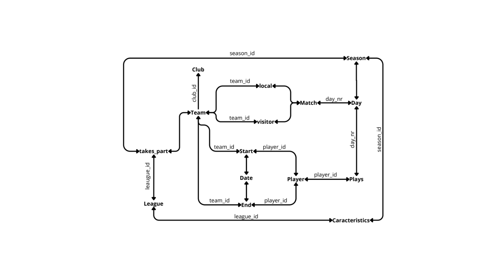

Gestion d'une ligue de football
Le but de ce projet est de comprendre, gérer et administrer une base de données pour la gestion d'une ligue de football. C'est un projet réalisé en binôme.
Compétence n°4 : Création d'une base de données
Ce projet est en lien avec la compétence 4 du programme du BUT informatique : Concevoir, gérer, administrer et exploiter les données de l’entreprise et mettre à disposition toutes les informations pour un bon pilotage de l’entreprise.
Les outils utilisés :
Les étapes :
Ce projet est divisé en deux parties complémentaires. La première partie consiste en l'analyse des dépendances fonctionnelles et la réalisation d'un diagramme de classes. La deuxième partie consiste à créer le diagramme des contraintes d'intégrité référentielle, puis à programmer la base de données en Tutorial D.
Analyse du sujet, liste des dépendances fonctionnelles, réalisation d'un diagramme de classes pour bien comprendre le sujet.
Reprise de l'étape 1 pour réaliser le graphe des contraintes d'intégrité référentielle. Ensuite, création de la base de données en Tutorial D.
